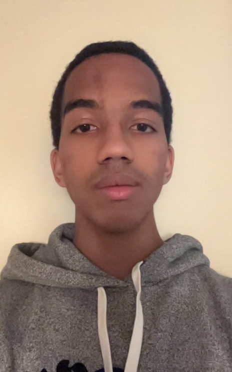

Donald Hicks

Summary
Current Junior at the College of the Holy Cross. Majoring in Physics and Computer Science. I am a self-taught web-developer,
and aspiring Mechanical Engineer with a Robotics/Mechatronics + Biomechanics focus. In terms of CS knowledge, I am competent in
backend development using Python and frontend development using JS, HTML, and CSS. I am as well experienced in using C, C++, Java, and R
in separate projects. I am currently working on expanding my knowledge and ability in CS for more systematic purposes towards
robotics.
Education
- Bachelor of Arts, Physics - College of the Holy Cross 27'
Research Experience
- SEELOS Researcher, Seelos STEM Scholars, College of the Holy Cross
August 2023 - October 2025
- Employed biomechanics-based research on CT scans of sea urchins used to gather data through the
volumes of the samples, depending on their treatments, through the studied experiment in Crofts Lab under
a Senior Undergraduate Mentor, Giulia DiRaimo, and Biology Professor Stephanie Crofts
- Collected data used to assist with the composition of various presentations and the publishing of a research
paper based on the experiment and its multiple properties
- Weiss Researcher, Weiss Summer Research, College of the Holy Cross
June 2025 - September 2025
- Employed biomechanics-based research on the morphology of American Alligator teeth in Crofts' Lab in the Biology Department
- Performed a procedure with 3DSlicer to compile CT scans of American Alligator skulls, selected based on
progressive stages of ontogeny, and collected data on the residual stress experienced in each tooth
- Data used to find a change in pattern in stress experienced throughout the dentition across the various
specimens representing an alligator’s ontogenetic development
- Presented research at symposium as a poster, currently displayed in Holy Cross’ Science Complex
Work Experience
Skills
- Technical Skills: Java, Python, C, C++, R
- Tools & Software: 3D Slicer, Git, Microsoft Office, Google Workspace
- Technical Skills: CT image segmentation, biomechanics analysis, data visualization
- Languages: Conversational Spanish
Awards and Certifications
- FAA Part 107 Certified Drone Pilot (2023)
Other